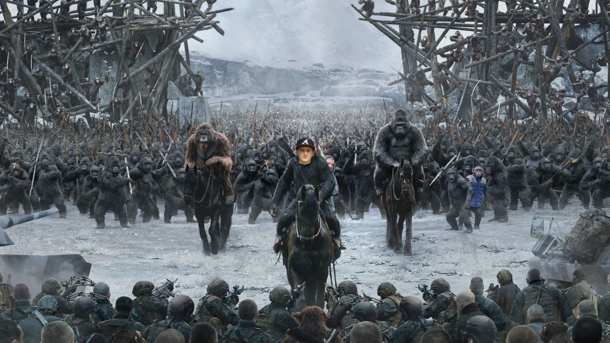

|  |
Hogwarts School of Monkeys from the Queen of MonkeysИнтригующая история одной подпольной конторки или как стать тестировщиком по за месяц и сесть за 120.000 деревянных без шума и пыли!!! |


| Фамилия Имя | Компания | Касса |
| Манкова Саша | EPAM | 120.000 р. |
| Обезьян Арсен | РТ Лабс | 90.000 р. |
| Сельджулаев Икром | ОТР | 140.000р. |